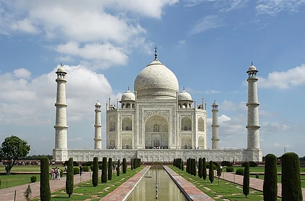

ttar Pradesh (Hindi: Uttara Pradēśa, pronounced [ˈʊtːəɾᵊ pɾəˈdeːʃᵊ] UTT-ər prə-DESH; abbr. UP) is a state in
northern India. With over 241 million inhabitants, it is the most populated state in India as well as the most
populous country subdivision in the world – more populous than all but four other countries outside of India
(China, United States, Indonesia, and Pakistan)[13] – and accounting for 16.5 percent of the population of India
or around 3 percent of the total world population. The state is bordered by Rajasthan to the west, Haryana,
Himachal Pradesh and Delhi to the northwest, Uttarakhand and Nepal to the north, Bihar to the east, Madhya
Pradesh, Chhattisgarh and Jharkhand to the south. It is the fourth-largest Indian state by area covering 243,286
km2 (93,933 sq mi), accounting for 7.3 percent of the total area of India. Lucknow serves as the state capital,
with Prayagraj being the judicial capital. It is divided into 18 divisions and 75 districts.
